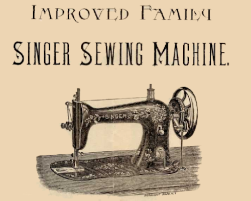
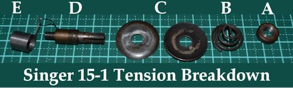
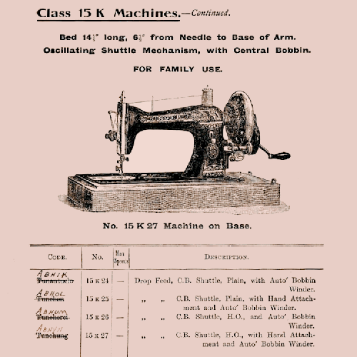
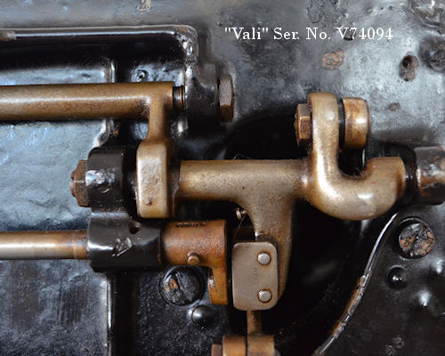
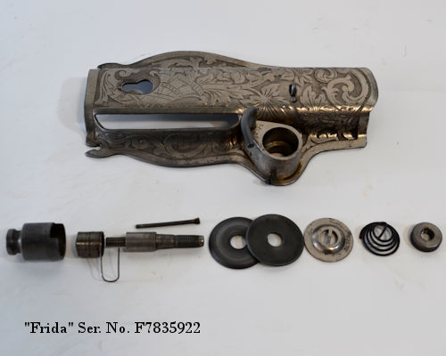

Philip H. Diehl invented a vertical oscillating shuttle for Singer in the late 1870s, and this was the basis of the Singer 15 class with the introduction of the 15-1 (AKA Improved Family) in 1879 as well as a number of industrial models—specifically the 17 and 18 class for shoe making as well as some early 15 and 16 subclasses for specific garment industry applications. This type of shuttle is called an oscillating shuttle in early catalogues and generally referred to as a "long beak" by collectors so as to avoid confusion with the horizontal oscillating hook used in the 66 and 99 class.
Of all the Singer models, there is probably far more variety in the 15 class than any other; I have counted close to 100 different submodels, most of which were designed for quite specific industrial applications and even include chain stitch models. In this article I will concentrate on the main domestic incarnations you are most likely to encounter:

15-1 introduced in 1879
Notable for its distinctive fiddle or serpentine bed and long beak shuttle, this model had a very primitive tension with a screw in stud and no tension release. The 15-1 was slowly superseded by a number of internediate models from the 1890s with the familiar 370mm x 178mm bed and a 1 o’clock bobbin case. There is evidence that Singer stole the design for this fingered bobbin case vertical oscillating shuttle from D&umml;rkopp but the records are rather murky on the matter. Regardless of who designed it, this case would come to be generically known as a "15 class" in the 20th century.
 15-1 Ser.No. 8239952 (1888)
15-1 Ser.No. 8239952 (1888)

New parts (and complications)
Bobbins (Singer part # 2073) and shuttles are still available thanks to the long-beak continuing to be used in industrial machines used in the shoe making industry.
Feet are low shank, and while technically any low shank domestic foot suitable for straight stitching will fit, there are feeding issues with hinged feet because of the feed dog design. This means that many modern feet, including clip shank, are not suitable so I recommend keeping an eye out for vintage feet.
New throat and slide plates are not really available, but a new HA-1 slide can be cut to size.
Tension parts. Original is best as all parts of the 15-1 face plate and tension are obsolete or not quite as good as the original parts. However, the HA-1 tension nut and tension plates will work if the originals are lost and I find the #32575 check spring intended for the 66 class is a better match than any 15 class spring supplied to me.
Balance Wheel etc.: as the end shaft of the machine is considerably longer than the later "standard" set by Singer, only original cranks and balance wheels are suitable.
The 15-1 was slowly superseded by a number of intermediate models in the early 1890s with the familiar 370mm × 178mm bed and a bobbin case with the finger pointing to 1 o'clock which would over time become most closely associated with the Singer 15 class. To my best research the first Singer to feature this bobbin case was the 15-11.
There is evidence that Singer stole the design for this fingered bobbin case vertical oscillating shuttle from Dürkopp but the records are rather murky on the matter. Regardless of who designed it, this case would come to be generically known as a "15 class" in the 20th century, but I urge you to not fall into the trap of calling non-Singer central bobbin (CB) machines "clones" as (except for the bobbin, bobbin case and shuttle hook) there is some variation among these machines.
Singer made a brief return to the long beak shuttle with the 15-22 (according to a Singer part catalogue the 15K1 had a rectangular bed like the 15-22 so positive ID will rely on knowing where the machine was made) and continued to use it in industrial shoe vamping machines (17 and 18 class) and these models are still in production in Asia and this is why shuttles and bobbins are still available.
I have not been able to find much information about the early 1 o'clock bobbin case 15 class machines of the 1890s, possibly because of the patent dispute with Dürkopp.

From a 1907 Singer Catalogue:
15K24 - Treadle "plain"
15K25 - Crank "plain"
15K26 - Treadle "H.O."
15K27 - Crank "H.O."
There is some uncertainty around the catalogue meaning of H.O. in this catalogue produced in 1907 for Singer machines produced at Kilbowie, although it may mean "Highly Ornamented". Note that "drop feed" does not mean that the feed dogs may be dropped for free motion work but is a description of how the machine feeds material under the presser foot.

15K26 and 15-30 went into production in Kilbowie and Elizabethport (respectively) around the turn of the century

My knowledge of the 15-30 is mostly indirect, but I have two examples of 15K class manufactured in 1908.
It is not really my habit to "name" my machines, but due to a situation that had me scratching my head for a very long time (and I have as yet to discover an absolute truth for) I have named the following three 15K models:
"Vali" Ser. No. V74094 allotted Jan-June 1908
"Vera" Ser. No. V802470 allotted July-DEC 1908
"Frida" Ser. No. F7835922 allotted July-DEC 1917
"Vera" is a confirmed 15K26 (although). "Vali" though superficially the same is a bit of a mystery as she has a different tension and underworkings. Even though I have found no mention of a 15K11 in the official record, I suspect that "Vali" may be an example as the design of the rocking shaft matches that of the 15-11 I found in a Singer parts catalogue.


Initially the 15K26 was manufactured with a pillar mounted winder and a heavy balance wheel with a 35mm shaft, just like the earlier version of the 15K. This heavier wheel means that the only suitable hand crank for these early model 15 class must be era specific.
In the 1910s (evidence suggests the start of WW1) the 15K26 design was modified to be more ecconomical to manufacture. The pillar mounted winder was replace with one mounted winder wheel guard (similar to the 66K1) and a lighter weight 25mm shaft balance wheel. Both Vera and Frida (early and later version 15K26) have a tension with a screw in stud and an internal pin to release the tension. All three models have the standard 370mm x 178mm bed and a 1 o'clock bobbin case.
All 15-30 class models have a wheel guard mounted "worm" winder like "Frida". While an early version of the submodel (as described in a parts catalogue) has a tension release similar to Vali, by 1915 the tension on Elizabethport 15-30 machines appears to be the same or similar to Vera and Frida. I can't comment on the balance wheels as I have only seen photos and sometimes machines are misidentified.
While the latter version of the 15K26 was mostly out of production by the start of the 1930s, replaced by the cheaper to manufacture 15K80 and the more advanced 15K88, I have seen at least one example dated to 1945 (possibly as a result of using old parts during rationing).
Bobbins are standard CB or 15 class Singer part # 2518 or heavy duty CB Singer part # 2996 and Bobbin case is the standard 1 o'clock CB, Singer part # 15277
Feet are low shank, and while technically any low shank domestic foot suitable for straight stitching will fit, there are feeding issues with hinged feet because of the feed dog design. This means that many modern feet, including clip shank, are sometimes not suitable so I recommend keeping an eye out for vintage feet.
Tension parts. Original is best as all parts of the face plate and tension are obsolete or not quite as good as the original parts. However, the HA-1 tension nut and tension plates will work if the originals are lost and I find the #32575 check spring intended for the 66 class is a better match than any 15 class spring supplied to me.
Balance Wheel & Hand Crank: as the balance wheel shaft of many early model (pre WW1) is 10mm longer than the later "standard" used by Singer, only era and model correct original cranks and balance wheels are suitable.


15K80 superseded the 15K26 in the late 1920s or early '30s (verification needed)
15K80 Treadle
15K81 Hand Crank
15K82 Belt Drive Motor
With an easier to manufacture tension, and a simpler bobbin winder to the 15K26.
While the 15K80 should have been quickly superseded by the 15K88 as it lacks reverse or a feed dog drop, it remained in production till well into the 1950s.
In North America the closest equivalent are the 15-86 (15-87) and 15-96 (15-97, 15-98) domestic submodels. I have no direct experience of these models.
New parts (and complications)
Bobbins are standard CB or 15 class Singer part # 2518 or heavy duty CB Singer part # 2996 and
Bobbin case is the standard 1 o'clock CB, Singer part # 15277
There are no "feed" issues with hinged feet.
Most parts are available with few complications. New balance wheels and hand cranks are compatible.

15D88, 15-88 and 15K88 and related submodels added a 3rd shuttle type to the Singer 15 "Household"class.
The most common submodels in Australia are:
15K88 Treadle
15K90 Belt Drive Motor
Featuring an 11 o’clock bobbin case, right to left threading and feed dogs which could be dropped for darning and embroidery, as well as a more sophisticated stitch length adjustment with could be set to reverse for back stitching, this subclass was developed the early 1920s by the design team at the Wittenberge factory in Prussia (Germany) and was in production by 1924. It would be another decade before this 15 class submodel was manufactured in the USA (Elizabethport) as the 15-88 and Great Britain (Kilbowie) 15K88 and related 89, 90 and 91 models. The ~88 was a treadle, ~89 a hand crank, ~90 belt drive motor and the ~91 potted motor. The most popular variation in the USA was the 15-91, but most of the Kilbowie machines were belt drive and sold as 15K88 regardless of how they were powered.
The USSR took possession of the contents of the Wittenberge factory and a Soviet factory used the tooling for the 15D88 to produce sewing machines for several decades. I have only seen photos of these.

Bobbins are standard CB or 15 class Singer part # 2518 or heavy duty CB Singer part # 2996 and Bobbin case is the standard 11 o'clock CB, Singer part # 125291
Tension parts, the spring is specific and a number of the parts are the same as the 201K. The needle clamp is also the same as the 201K
There are no "feed" issues with hinged feet.
Most parts are available with few complications. New balance wheels and hand cranks are compatible.
There 15-75 and 15-125 are mechanically the same as the 15-88 and 15-91 respectively except with a different body shape (reminiscent to the 201K21).
The Monza produced 15M75 is the only version I have seen in Australia.
The Kilbowie factory’s last blast 15 model in the early 1960s, the 15K110 was a 1 o'clock BC model which adopted some of the innovations developed by Toyota, Brother and Janome in the early 1950s for their HA-1 Class models.
After the Singer factories in the USA and Kilbowie stopped manufacturing any version of the 15 class, it continued to be made in Taiwan and later China for places where a simple mechanical machine which could be treadled or hand-cranked was preferable to an electric machine which could do a variety of stitches. Sadly the quality of the Chinese made machines dropped to match the price NGOs with the best of intentions are willing to pay and so while they are on occasion imported into Australia to be sold as "nostalgia" machines, they are really only suitable as décor.
NOTES:
I use a ~ to denote the same submodel number was used for machines made to the same specifications.